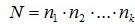
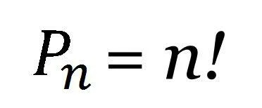
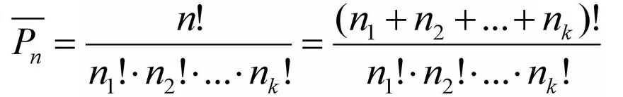
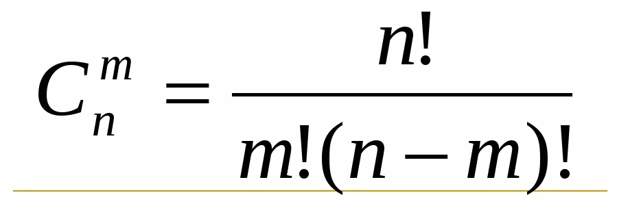
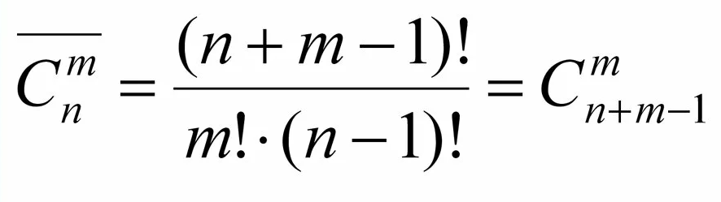
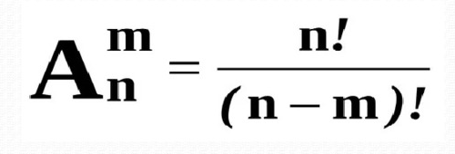
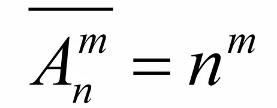

Термин «комбинаторика» был введён в математический обиход Лейбницем, который в 1666 году опубликовал свой труд «Рассуждения о комбинаторном искусстве». Формулы и принципы комбинаторики используются в теории вероятностей для подсчета вероятности случайных событий и, соответственно, получения законов распределения случайных величин.
Правило суммы. Если два действия А и В взаимно исключают друг друга, причем действие А можно выполнить m способами, а В – n способами, то выполнить одно любое из этих действий (либо А, либо В) можно n + m способами. Знак ‘+’ следует понимать и читать как союз ИЛИ.
Правило произведения. Пусть требуется выполнить последовательно k действий. Если первое действие можно выполнить n^1 способами, второе действие n^2 способами, третье – n^3 способами и так до k-го действия, которое можно выполнить n^k способами, то все k действий вместе могут быть выполнены N = n1 * n2 * … * nk способами
Перестановкой из n элементов называется любое упорядоченное множество из n данных элементов.
Для случая, когда среди выбираемых n элементов есть одинаковые, задачу о числе перестановок с повторениями можно выразить вопросом: «Сколькими способами можно переставить n предметов, расположенных на n различных местах, если среди n предметов имеются k различных типов (k < n), т. е. есть одинаковые предметы». В этом случае используется формула перестановок с повторениями:
Сочетанием без повторений из n элементов по m называется любое m-элементное подмножество данного n-элементного множества, при этом порядок не имеет значения. Формула, которой выражаются сочетания без повторений:
Задачи о числе сочетаний с повторениями звучат таким образом: имеется по k одинаковых предметов каждого из n различных типов, сколькими способами можно выбрать m (m ≤ k) из этих (n * k) предметов? Формула для решения подобных задач представлена далее:
Размещением из n элементов по m называется любое упорядоченное множество из m элементов, состоящее из элементов данного n-элементного множества. (т.е. порядок важен!)
Также классической задачей комбинаторики является задача о числе размещений с повторениями, содержание которой можно выразить вопросом: «Сколькими способами можно выбрать и разместить по m различным местам m из n предметов, среди которых есть одинаковые?» В таком случае пригодится формула размещений с повторениями:
